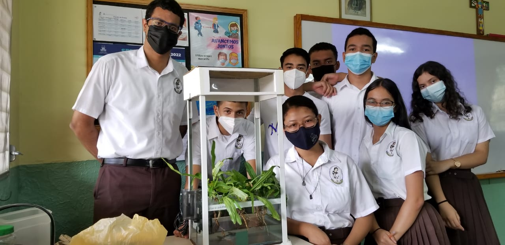
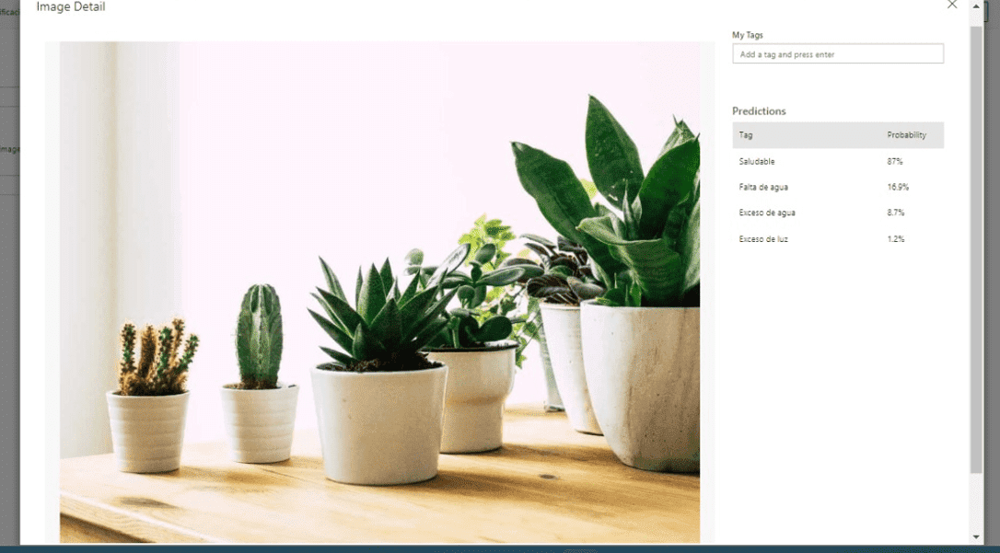
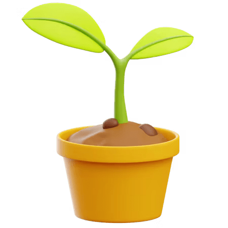

|
HOME | ACERCA DE | BLOG | PROYECTOS | ||||
| PROYECTOS DE | ||||||||
| Yared Bustillo | ||||||||
| Carolina: La Asistente Virtual de las Matemáticas | |
Carolina es el nombre de nuestro proyecto de matemáticas;
es una asistente virtual controlado por voz, a través del lenguaje de programación Python.
Es una herramienta funcional como asistente de voz, a la que le puedes preguntar cosas o pedir
que realice una serie de tareas por ti, simplemente al estar frente a tu dispositivo y hablarle algo
por medio del micrófono.
Carolina tiene esa disponibilidad de poder realizar muchas funciones, las cuales implementamos
por medio de líneas de código de comandos en Python, inicialmente importando las librerías de
Tkinter, para interfaces gráficas o ventanas de aplicaciones extensas, librerías de matemáticas, para
Chatbots, Wikipedia como referente informativo para que Carolina realice búsquedas y adjunte
disposiciones y otras series de módulos de acciones programadas por nuestro equipo. |
|
| Sistema de Facturación en Excel | |
Sistema de facturación en Excel a partitr de programación en Python
usando distintas librerías, primordialmente Tkinter y Openpyxl que es el que hace posible la creación de la ventana sobre la cual se va a trabajar, y el sistema login
y signup correspondiente, en sí, fueron estas las librerías que hicieron este proyecto posible.Posee características y funcionalidades tales como: |
|
| Granja Hidropónica Automatizada | |
Nuestro proyecto funciona como un pequeño ecosistema,
donde los peces que se encuentran en la parte inferior ayudan a nutrir las plantas mediante el fertilizante que estos producen, las raíces de las plantas purifican
el agua que regresa a los peces.
En la parte superior tenemos la iluminación para las plantas, que es automatizada, programada para encenderse durante un tiempo en especifico. Todo esto hace posible el
funcionamiento de la iluminación de nuestra granja, que está soportada por varillas metálicas en las aristas de la pecera, dónde se encuentra la fauna de nuestro ecosistema,
constantemente oxigenado por el filtro.
|
 |
| Detector de salud en plantas con Custom Vision AI | |
|  | Clasificación y reconocimiento del estado de las plantas mediante IA Implementamos este subproyecto para mantener un control en el estado de las plantas, además de ayudarnos a saber qué es exactamente lo que necesita la planta. Esto se hace mediante una cámara que nos proporciona imágenes del cultivo para ser analizadas mediante una IA de Custom Vision. Equipo: Yáred Bustillo, Aaron Guevara, Ángel Florentino, Luis Euceda, Elda Gabriela, Raquel Euceda, Cristian Adriano, Gina Anariba  |
| Comayagua, Honduras Barrio San Sebastián 12101 Comayagua |
+504 89222404 iessebustillo@gmail.com @YaredBM |
|
||
| Copyright Yáred Bustillo 2023 | ||||